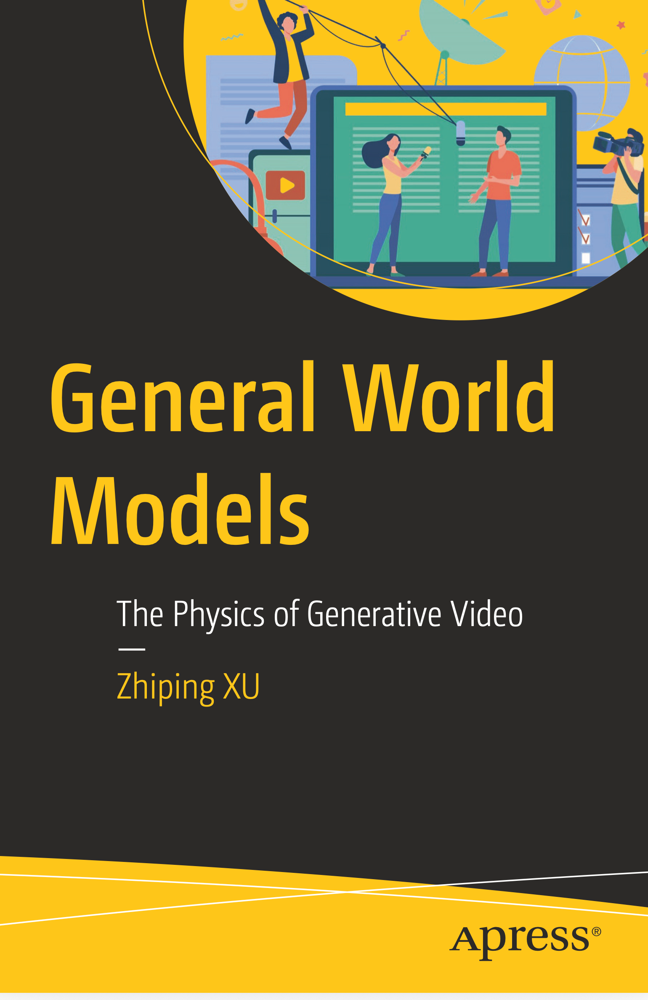
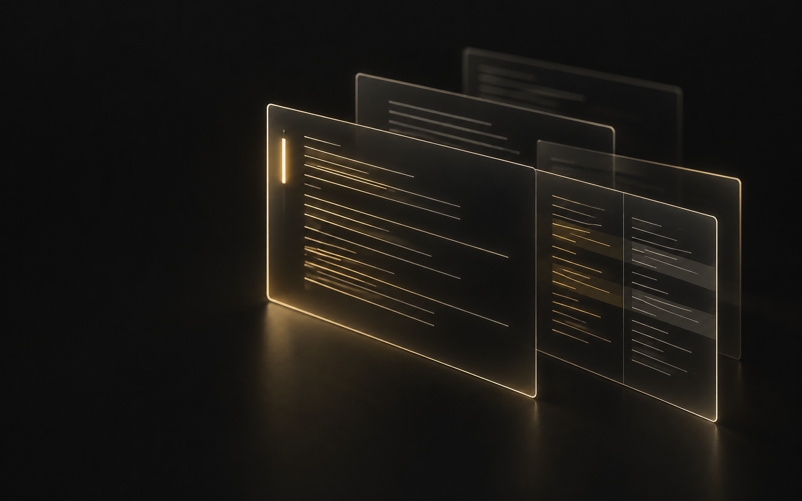
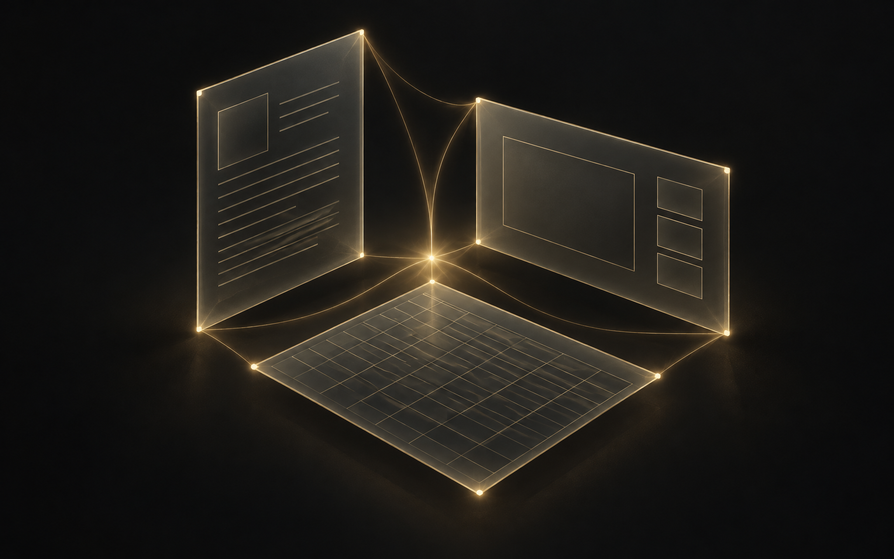
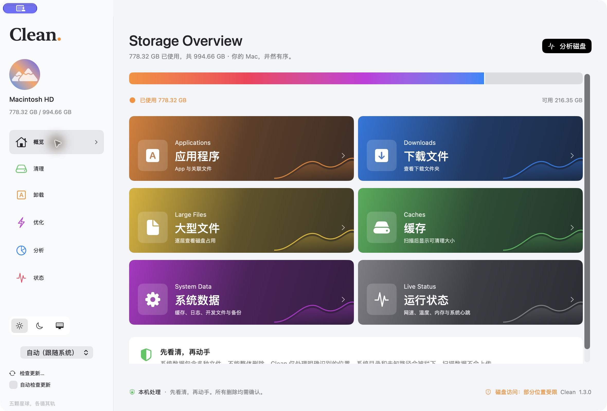

General World Models
The Physics of Generative Video
Springer Nature / Apress · 2026 · 独立作者
- 时空表征：让模型记住世界，而不只是记住像素。
- 镜头语言控制：把分镜、运镜与剪辑逻辑写进生成条件。
- 多模态提示工程：一套可复用、可验证的生成视频工作方法。

The Physics of Generative Video
Springer Nature / Apress · 2026 · 独立作者
模型可以换，工具各有所长——把选择权和工作流，掌握在自己手里。



原生 macOS AI 浏览器，网页上下文直接进入模型。
面向 x86-64 的 Agent 桌面，国产系统上的智能体工作环境。
跨平台 AI 浏览器，同一套基座的另一种界面。
本地优先的 AI 笔记，数据留在自己的磁盘上。
跨平台开源 AI 视频剪辑。
AI 图像创作工作台，偏创作端的另一个入口。
题目可交互，结论可离线验证，模型不替学生思考。

Python 互动实验室：把执行过程变成可拖、可停、可看的画面。
Python 像素冒险游戏：过关的唯一前提，是把代码写对。
可视化节点工作台，用连线代替嵌套逻辑讲清数据流。
局域网内的课堂练习与批改系统，不依赖外网。
以数学大纲驱动关卡的互动闯关游戏，教什么就玩什么。
双模型出题判分的桌面台，出题与阅卷相互制衡。
高考数学本地题库与出题应用，全程离线可用。
本地 AI 英文阅读工作台，生词与图解即点即得。
数学射击游戏与手绘转代码，平板上的两种学法。
中文数学可视化解题技能，把思路直接画出来。
连接组、校园、宇宙，都被做成可以走进去、可以算得清的模型。
AI 科研桌面工作台：从文献到实验记录的同一个入口。
可视化数据挖掘与分析框架，流程完整可复现。
用果蝇全脑连接组驱动的三维交通神经控制实验。
三维复原的复旦校园，打开浏览器就能走一遍。
WebGL / 移动端3D 场景交互阅读与心智光谱，把物理讲成现场。
一部关于宇宙的哲思短片，全部由代码生成。
短片群体智能加速、RAG 审计与有声书生成，跑在 Apple Silicon 上。
不上传、不驻留、不索取权限之外的东西。

磁盘清理与卸载工具，把每一分空间的去向讲清楚。

离线 macOS 原生中文输入法，不联网、不上云。
原生 macOS 多账户 AI 邮件客户端。
macOS 录屏软件，启动即录，关掉即无痕。
通过 Apple 公证的下载客户端。
局域网直传与屏幕动效工具，跨设备不绕远路。